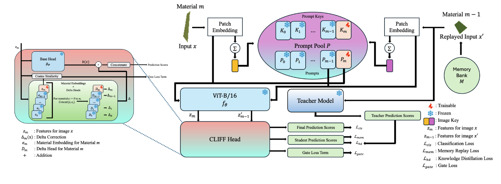
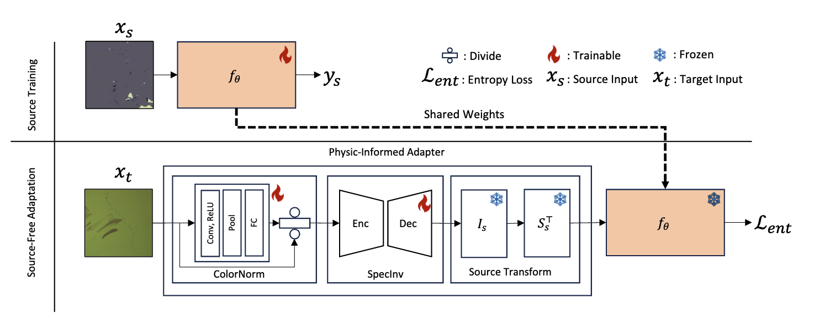
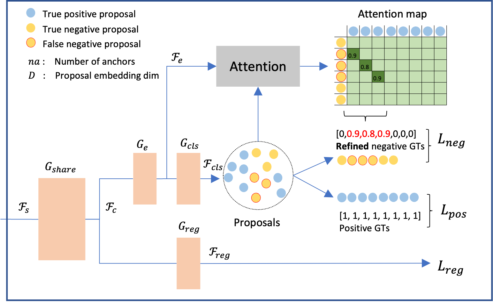

|
Quantum 2D Materials
CVIU Lab, EECS DepartmentUniversity of Arkansas
https://uark-cviu.github.io/
|
{kind=link}
IntroductionTwo-dimensional (2D) quantum materials are only a few atoms thick, yet they display extraordinary properties that can revolutionize electronics, photonics, and quantum technologies. By stacking these materials into van der Waals heterostructures, scientists can design entirely new systems with tailored functions. However, identifying and characterizing high-quality flakes remains a challenge—traditional methods are slow and require expertise. Our project combines materials science with artificial intelligence to automate this process. By using deep learning to recognize and analyze 2D flakes under a microscope, we aim to accelerate discovery and enable faster development of next-generation quantum devices. |
Research
|
|
 |
CLIFF: Continual Learning for Incremental Flake Features in 2D Material Identification
Sankalp Pandey, Xuan Bac Nguyen, Nicholas Borys, Hugh Churchill, Khoa Luu Under Review, 2025 |
|
 |
Phi-Adapt: A Physics-Informed Adaptation Learning Approach to 2D Quantum Material Discovery
Hoang-Quan Nguyen, Xuan Bac Nguyen, Sankalp Pandey, Tim Faltermeier, Nicholas Borys, Hugh Churchill, Khoa Luu Under Review, 2025 |
|
 |
Two-dimensional quantum material identification via self-attention and soft-labeling in deep learning
Xuan Bac Nguyen, Apoorva Bisht, Ben Thompson, Hugh Churchill, Khoa Luu, Samee U Khan IEEE Access, 2024 |
Team |

|
Dr. Khoa Luu
Assistant Professor Project Leader |

|
Xuan Bac Nguyen
PhD Candidate |
Sponsors |
|
|
|
|